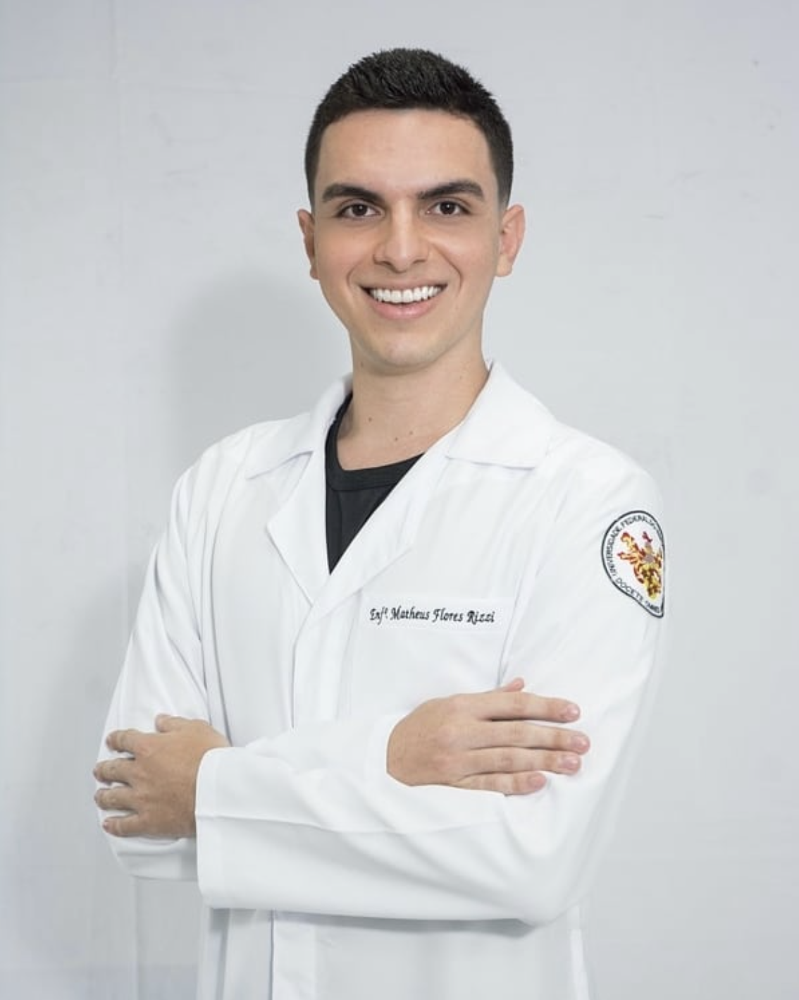

| MINHA HISTÓRIA | ||
|---|---|---|
|  |

|

|
Sobre mimMeu nome é Matheus Rizzi, tenho 28 anos e moro em Serra - ES. Minha vida acadêmica e profissional se iniciou na Enfermagem antes da área da tecnologia. Sempre fui apaixonado por tecnologia e atualmente decidi iniciar Sistemas de Informação. Minha trajetória acadêmica começou na Unidversidade Federal do Espírito Santo, onde concluí meu curso de Enfermagem e obstetrícia. Ainda na Universidade participei de feiras ciêntificas, congressos, Inciação Científica e estágios extra-curriculares em Hospitais da Grande Vitória. Logo após, comecei a trabalhar como enfermeiro assistencial no Hospital Evangélico de Vila Velha - HEVV. Estive na linha de frente ao combate contra Covid-19, onde foram 2 anos muito difíceis. Profissionalmente, tenho experiência em Gestão e Audiotria Hospitalar. Hoje pretendo eveoluir na área da tecnoligia e quebrar barreiras, uma vez que este mundo é completamente novo e desconhecido para mim. Cada dia tem sido uma descoberta e quero estar pronto para novos desafios. |
||